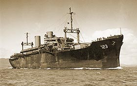

|
j
a v a s c r i p t |
April 10, 1945

Admiral Eberle
Last night, after 2,146 internees left the Camp in the Admiral Eberle and several hospital ships, Santo Tomas was so bare and ghostly that Mrs. Connor almost cried. This morning, Colonel Gregory sternly requested all who wanted to stay to definitely register between 0800 and 0900. If you said you weren't going, you were likely to get a nasty look and an abrupt: "Why not? What are you going to stay for?" Among those who left were the two Heredia boys with their wives and children, and "Chino" Valdes and family. Schaer will join other Swiss going to the States; it's been "approved" provided they can support themselves. He told me of an affidavit filed by one Lopez on the events at the German Club. There were 1,000 people there when the Japanese shot-up and burned the place. Lopez was hit too but managed to escape. A fellow named Hoffman saw the charred remains and estimated 600 died there. Schaer thinks only 20 of them were German. |
|
|
|
|